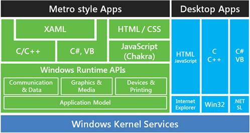
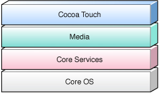

平台架构
Windows的架构

可以使用C/C++、C#、VB、HTML/CSS/JavaScript等多种语言来开发Metro应用，同时还可以通过XNA/Direct框架来开发游戏。Metro应用下统一调用的是WRT API，减少了原来Windows开发中复杂的类库兼容问题。
Windows phone8 和Windows 8框架比较
从上图中我们可以清楚的看到Windows Phone 8 和 Windows 8 开发过程中可以共用那些部分这里注意的一点是JavaScript+HTML的开发模式在Windows 8 WinRT的环境下是支持API级别调用的但是在WinPRT的环境下是基于 IE10 Control的
Android体系结构介绍
Android作为一个移动设备的平台，其软件层次结构包括了一个操作系统（OS），中间件（MiddleWare）和应用程序（Application）。根据Android的软件框图，其软件层次结构自下而上分为以下几个层次：
第一、操作系统层（OS）
第二、各种库（ Libraries）和Android 运行环境（Run Time）
第三、应用程序框架（ Application Framework）
第四、应用程序（ Application）
详细参见http://developer.android.com/index.html
iOS架构介绍
IOS是Apple长期积累的结果，系统核心、基础服务和应用框架都采用C/C++或object-C开发，而应用采用Cocoa Touch框架，以object- C开发，应用编译后以本机代码在设备上运行，因此具有很高的运行效率。

Apple IOS体系架构
详细参见https://developer.apple.com/devcenter/ios/index.action
Windows8与WP8通用的native API
共享的winNT内核
windows phone 7采用的是winCE内核，从windows phone 8开始采用与Windows 8同样的winNT内核。winNT内核具有以下几个特征：
多重引导功能，可与其它操作系统共存。
实现了“抢先式”多任务和多线程操作。
采用SMP（对称多处理）技术，支持多CPU系统。
支持CISC（如Intel系统）和RISC（如Power PC、R4400等）多种硬件平台。
可与各种网络操作系统实现互操作。如：UNIX、Novell Netware、Macintosh等系统；对客户操作系统提供广泛支持，如MS-DOS、Windows、Windows NT Workstation、UINX、OS/2、Macintosh等；支持多种协议：TCP/IP、NetBEUI、DLC、AppleTalk、NWLINK等。
安全性达到美国国防部的C2标准。
NT系统价格低，应用服务能力强、安全性能高、内含软件丰富等特点是较为流行的网络操作系统。
由于共享windows内核所以在API级别同样共享了很多AIP，如下图所示：
Windows 8和Windows Phone 8共享Windows内核，这意味着开发人员能够使用常见的编程模型来构建应用程序和游戏。从开发成本或者是产品规划的角度上看，开发人员可以利用相同的代码/开发语言/开发工具来创建应用程序和游戏 同时应用在Windows8 和Windows Phone 8从根本上加快开发时间。
类似的开发模式：MVVM
在 Windows Phone 8 和 Windows 8 应用之间共享代码的最大潜力在于您的应用逻辑。我们建议您针对每一个平台定制应用 UI，以便您可以通过统一每一个平台的用户体验准则，交付最佳的用户体验。Windows Phone 8 和 Windows 8 支持的设计概念和 XAML 控件相类似，但是您不应对共享 XAML 进行投入。相反，构造您的应用逻辑使之可以重用将会更成功。我们建议您在应用中使用模型视图查看模型 (MVVM) 设计模式。
MVVM 是一种将数据从 UI 中分离的方式。在 MVVM 设计模式下，开发人员可以编码应用逻辑，设计人员可以创建 UI。XAML 旨在让使用 MVVM 构建应用变得简单，二者使 UI 和应用逻辑的分离变得简单自然，从这个意义上来说二者是互补的。下图演示使用 MVVM 设计模式所构建的应用的基本体系结构：
● 模型：这代表应用使用的数据模型。例如，在图片共享应用中，该层可能代表设备上可用的图片集和用于读取和写入图片库的 API。
● 视图：应用通常由 UI 的多个页面组成。对用户显示的每一个页面即 MVVM 术语中的视图。视图是用于定义和设计用户所看到内容的 XAML 代码。模型中的数据显示给用户，ViewModel 根据应用的当前状态将该数据提供给 UI。例如，在图片共享应用中，视图是向用户显示设备上的相册列表和相册中的图片的 UI，以及向用户显示特定图片的另一个可能的 UI。
● ViewModel:ViewModel 将数据模型或仅仅是模型绑定到应用的 UI 或视图。它包含用以管理模型中的数据的逻辑，而且将数据作为 XAML UI 或视图可以绑定的属性集公开。例如，在图片共享应用中，ViewModel 将公开相册列表，并对每一个相册公开图片列表。UI 不知道图片的来源和检索方式。它只知道被 ViewModel 公开的图片集，并且向用户显示它们。
如果您要构建 Windows Phone 8 和 Windows 8 应用，建议您设计和开发根据各个平台定制的 UI，以交付最佳的用户体验。应用的大多数 UI 或视图将特定于平台。应用的其他部分有可能在 Windows Phone 8 应用和 Windows 商店 应用之间实现可移植或通用。下面的关系图说明了这种情况。
可移植代码和通用代码存在差异。可移植代码指任何编译一次后可以在 Windows Phone 8 和 Windows 8 上运行的代码。例如，大多数的 .NET API 在这两个平台之间可移植，而且可以在可移植类库中实现。通用代码指使用通用于这两个平台的 API 的代码，但是不可移植。例如，使用通用于 Windows Phone 8 和 Windows 8 的 Windows 运行时 API 的代码被视为通用，但是它不可移植，因为必须针对每一个平台对它进行编译。它也不可用于可移植类库。即使是使用 MVVM，应用可以共享代码的具体程度仍取决于应用的复杂性及其所使用的 API。
SDK
Windows Phone SDK目前更新到 8.0版本，该版本是功能全面的开发环境，适用于针对 Windows Phone 8.0 和 Windows Phone 7.5 开发应用和游戏。 Windows Phone SDK 可以为 Windows Phone 提供一个单独的 Visual Studio Express 2012 版本，或者作为 Visual Studio 2012 专业版、高级专业版或旗舰版的一个插件。 使用 SDK，您可以利用现有编程技巧和代码来构建托管代码或本机代码应用。 此外，SDK 包括多个仿真程序和其他工具，可以让您在真实条件下分析和测试您的 Windows Phone 应用。
适用于 Windows 8.1 的 Windows 软件开发工具包 (SDK) 包含标头、库和工具，可用于创建在 Windows 操作系统上运行的应用。你可以使用 Windows SDK 以及所选开发环境来为 Windows 8.1 编写 Windows 应用商店应用和桌面应用。
Windows SDK 还包含用于为 Windows 7、Windows 8 和 Windows 8.1 认证计划测试应用的 Windows 应用认证工具包 3.1 (Windows ACK)。Windows SDK 不再附带完整的命令行构建环境。你必须单独安装编译器和构建环境。如果你需要包含编译器和构建环境的完整开发环境，则可以下载 Visual Studio 2013，其中包含 Windows SDK 的合适组件。
下载地址：Windows 8 SDK
通用的Windows native API
Windows Phone 8与Windows 8 都支持基于Direct3D框架的使用C++语言来开发游戏。详细的通用API见下表：
|
Common native API |
|
DirectX 11.1 |
|
XAudio2 |
|
Media Engine |
|
STL |
|
CRT |
|
WinSock |
更多详细的Windows Phone 8 native API介绍，请见Windows Phone 8的Direct3D APIs
通用的Windows Runtime API
Windows Runtime最早在Windows 8的开发中引入，它提供了一个核心的下层结构，一个通用的类型系统和一个标准的编程模型。它是用C++来实现被投射到C#,VB,C++和JavaScript的中，所以它可以很轻松的与您选择的语言交互。Windows Phone 8中包含了一个Windows Run Time的子集，大部分的功能开放给所有被支持的语言。这样你就可以在一些常见的功能中使用一样的API，比如网络、传感器、处理本地数据以及实现应用内支付。通过使用Windows Run Time API，Windows 8 和Windows Phone 8共享代码的时候，可以节省很多时间，增加应用的可维护能力。下表是两个平台通用的Windows Runtime APIs。
|
Common Windows Runtime API |
|
Networking |
|
Sensors |
|
Proximity |
|
Storage |
|
DataSaver/Connection Manager |
|
Location |
|
Touch |
|
Online Identity |
|
Keyboard |
|
Launchers & Choosers |
|
In-App Purchase |
|
Sensors |
|
Threading |
|
Base Types/ Windows.Foundation |
在Windows Runtime API中还添加了一些Phone特有的API，包括语音合成和识别，及VOIP等功能。从Windows 8集成来的Windows Runtime APIs和为Phone添加的Windows Runtime APIs组成了我们所说的Windows Phone Runtime API，详见Windows Phone Runtime API。
共享.NET引擎
在 Windows Phone 8，.NET 框架精简版已被 CoreCLR所取代，CoreCLR的使用与在 Windows 8 上的.net相同。CoreCLR提供稳定和高性能对您的应用程序，以便开发者可以充分利用多核处理和改善电池寿命。新的设备现在都是多核，操作系统和应用程序会因为这种技术而更快。Windows Phone 8 、CoreCLR 都利用多核技术，使用现代软件技术和模式。您可以在您的应用程序采用 CoreCLR 优势的其他改进包括异步编程模型和改进的自动优化垃圾回收器。当您提交您的 Windows Phone 应用程序到存储区时，它将在云中使用的优化编译器产生的高质量的ARM代码进行编译。您的应用程序将传递到用户的手机上预编译。这提高了开始时间，并节省电池寿命。你可以在您的 Windows Phone 8 和 Windows 8 XAML 应用程序中利用相同的.NET 引擎，并使用共享技术，最大限度地为这些应用程序在两个平台上的代码重用。更多的信息，请参阅最大化 Windows Phone 8 和 Windows 8 之间重用的代码。
相似的XAML UI 控件
Windows Phone 8 和Windows 8拥有相似但不完全相同的设计守则和建筑模块。Windows Phone 8和Windows 8 的设计原则的核心是适应不同的平台。关键的是让你的应用在各个平台上看起来符合平台的风格，并且制造出最好的用户体验。
在Windows Phone 8上你需要设计符合手机风格的应用，包括手机屏幕分辨率，还有特有的用户体验，例如锁屏，动态磁贴，导航模型等。相同的在Windows Phone 8中，你的应用商店app也要符合Windows 8的用户体验，利用平台支持的app视图和导航控件，还有许多平台提供的特性都会为你的app增色不少。
你在两个平台上都是用XAML来创建UI的，并且很多控件相同的，如下图所示：
从上面的图中可以看到 windows 8 和 windows phone 8中大部分控件都是相似的，虽然这些控件不是完全基于相同的命名空间下 但是对XAML而言写法和用法都是相同的，所以在设计师进行叶面设计的时候很多控件UE操作都是相同的，当然windows phone 8中也有一些特有的控件 例如：Panorama和Pivot就是因为windows phone的用户使用习惯特有存在的，然而在windows 8中用户更喜欢使用 GridView 和 FlipView
两个平台上控件的比较情况参见Windows Phone 8和Windows 8的空间比较。
从Android到Windows
如果你开发 Android 应用程序，并且想要还为 Windows 8 开发应用程序，这是一个很好的开始。我们会向您展示如何使用微软开发工具，像 Microsoft Visual Studio 和微软的编程语言如 C#。你将了解一些开发Windows UI应用的一些概念，我们管这些应用程序叫 Windows 应用商店应用。
Windows 8 引入一个新的平台，用于创建引人入胜的应用程序。因为 Windows 应用商店的应用程序提供很多独特的功能，Android 应用程序的接口将可能阻止您和您的用户使用这些功能。所以不要只是移植您的应用程序， 而是要重新设计您的应用程序，并利用这些功能，如应用程序栏、 语义缩放、 搜索和共享合同、 文件选取器、 Charms Bar、 动态瓷砖和Toast通知。
更多信息请参见：平台概述（从 Android 到 Windows）
从IOS到Windows
你可以使用不同的语言来创建window应用（C++, C#, Visual Basic和JavaScript）。对于iOS的开发者，C#是与Objective-C最像的语言。有许多图书馆和框架，以帮助您编写您的应用程序，或者，你可以使用创作工具，通过最少的编码来创建一个应用程序具。请参阅 Windows 8 的开发工具和框架。
Windows 应用程序商店看起来不同于传统的桌面应用程序，因为它有一个全屏幕视图、 一个现代的用户界面和新的控件。事实上，Windows 应用商店应用程序是一个在运行 Windows 8系统的台式机、 笔记本电脑和平板电脑上都能运行的应用程序。
使用Windows 8，可以使用新的 Windows Run Time API。你可以使用它编写图形方式丰富、 易于使用的应用程序，可充分利用现代化的硬件，像触摸屏和位置传感器。应用程序可以与对方共享数据，甚至共享屏幕。瓷砖替换图标，可以实现真正的实时信息更新。Windows Run Time API拥有的 Win32 和.NET 开发的优点，并创建一个全新的现代开发平台。
Microsoft Visual Studio 提供了一个非常受人尊重的发展环境，并且被Blend支持，专用于创建和测试用户界面。
从iOS 开发转到 Windows 8 开发是非常容易的。你甚至不需要一台电脑入门。使用您的 Mac 运行 Windows 8 使用仿真软件，所有的工具都是免费下载的。
更多内容参见：IOS开发人员开发windows8应用程序入门